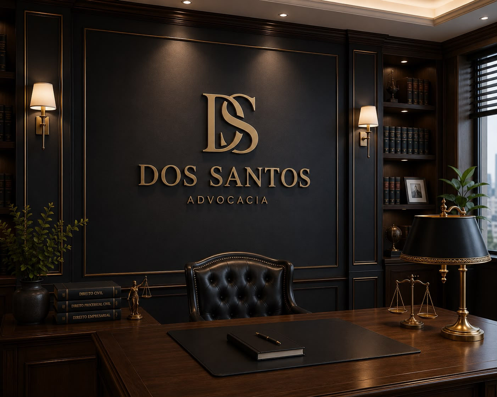
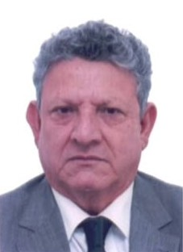

O escritório Dos Santos Advocacia nasceu do compromisso com a justiça e o respeito ao cliente, unindo rigor técnico a um atendimento próximo e humano em Cuiabá e região.
Nossa equipe multidisciplinar acompanha cada caso com dedicação integral, buscando sempre a melhor solução jurídica dentro dos princípios da ética e da transparência.
Oferecer assessoria jurídica técnica e criteriosa, traduzindo questões complexas em decisões claras para que o cliente compreenda cada escolha do seu caso.
Ser reconhecido em Mato Grosso como escritório de referência em Direito Privado, pela profundidade técnica dos pareceres e pela seriedade na condução de causas de alta complexidade.
Colocar à disposição do cliente a experiência de quem conhece o processo dos dois lados: da tribuna e do julgamento.
Nenhuma expectativa é criada sem fundamento jurídico que a sustente.
O que é dito ao escritório permanece no escritório, por dever legal e por princípio.
A orientação é dada com base na lei, ainda quando não seja a resposta desejada.
Atuação firme na defesa do cliente e sempre urbana com o Judiciário e a parte contrária.
Poucos casos por vez, cada um acompanhado pelo advogado responsável.
Contratos, responsabilidade civil e questões patrimoniais.
Divórcio, guarda, pensão alimentícia, inventário e testamento.
Defesa de empregados e empresas em questões trabalhistas.
Constituição de empresas, contratos e consultoria societária.
Defesa técnica em todas as fases do processo penal.
Planejamento tributário e defesa em autuações fiscais.
Aposentadorias, benefícios e revisões junto ao INSS.
Defesa dos direitos do consumidor em relações de consumo.
Consultoria e defesa em processos eleitorais, campanhas e prestação de contas.

Dirceu dos Santos iniciou sua trajetória profissional na advocacia em 1983.
Em 1990, ingressou na magistratura estadual. Durante 36 anos, conheceu o funcionamento da Justiça de dentro: primeiro como juiz de Direito em oito comarcas de Mato Grosso e, posteriormente, como Desembargador do Tribunal de Justiça.
Foram milhares de processos analisados e julgados, com atuação especialmente dedicada ao Direito Privado.
Em 2024, proferiu 3.052 acórdãos e decisões, alcançando o segundo maior índice de produtividade entre os desembargadores das Câmaras de Direito Privado do TJMT.
Agora, retorna à advocacia trazendo consigo uma experiência construída ao longo de mais de quatro décadas.
Experiência para compreender o problema.
Técnica para construir a estratégia.
Profundidade para enfrentar questões jurídicas complexas.
Estudo detalhado do caso e do cenário jurídico envolvido.
Definição do caminho mais seguro e eficaz para o cliente.
Condução técnica do caso com transparência em cada etapa.
Retorno constante sobre o andamento e próximos passos.
Acompanhe as decisões e publicações mais recentes diretamente nas fontes oficiais.
Julgamentos, teses e repercussão geral publicados pelo portal oficial do STF.
ACESSAR → STJDecisões, súmulas e jurisprudência mais recentes do STJ.
ACESSAR → CNJResoluções, metas e novidades administrativas do Poder Judiciário.
ACESSAR → TJMTDecisões e comunicados relevantes para quem litiga em Mato Grosso.
ACESSAR →Toda informação compartilhada com o escritório é protegida pelo sigilo previsto no Estatuto da Advocacia.
Explicamos cada etapa do processo em linguagem acessível, sem promessas de resultado.
O cliente trata diretamente com o advogado responsável pelo seu caso, do início ao fim.
Prazos e honorários definidos por escrito antes do início dos trabalhos, conforme a tabela da OAB/MT.
Atendimento sigiloso e personalizado. Envie sua mensagem ou fale diretamente pelo WhatsApp.
Coletamos apenas os dados que você informa espontaneamente no formulário de contato ou pelo WhatsApp: nome, telefone, e-mail e a descrição do assunto. Não utilizamos cookies de rastreamento nem ferramentas de publicidade.
Os dados são usados exclusivamente para responder ao seu contato e avaliar a possibilidade de atendimento. Não compartilhamos informações com terceiros, salvo obrigação legal, e todo conteúdo recebido é protegido pelo sigilo profissional previsto no Estatuto da Advocacia.
Conforme a Lei nº 13.709/2018 (LGPD), você pode solicitar a qualquer momento a confirmação, correção ou exclusão dos seus dados, bastando escrever para contato@dossantos.adv.br.
As informações deste site têm caráter meramente informativo, em conformidade com o Código de Ética e Disciplina da OAB, e não constituem consulta ou orientação jurídica. O envio de mensagem não estabelece, por si só, relação advogado-cliente.